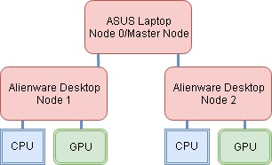

Master Node
The master nod the local cluster is a laptop that will be able to communicate between the two nodes. The master node is in charge of data distribution and scheduling tasks to node 1 and node 2. The master node also host up to date status information on the load of the cluster.
Node 1
The first node of the local cluster is one of two of the Alienware desktops in the lab. Equiped with a NVidia GPU and an Intel Core i7 CPU. Utilizing both GPU and CPU could show dramatic speedup in parallel code performance.
Node 2
The second node of the local cluster is one of two of the Alienware desktops in the lab. Equiped with a NVidia GPU and an Intel Core i7 CPU. Utilizing both GPU and CPU could show dramatic speedup in parallel code performance.
Cluster Layout

This particular cluster is classified as a ‘Beowulf Cluster’. A Beowulf Cluster is identified as identical, commodity-grade computers networked into a small local area network with libraries and programs installed which allow processing to be shared among them. This cluster uses the Open Message Passing Interface (OpenMPI) for coordination and dividing tasks among the group of networked computers.
A Network File System (NFS) is also utilized between the master node and two secondary nodes that lets all nodes view and optionally store and update files as if they were on each node’s own computer.
The master node is a separate machine from node 1 and node 2. Ganglia, a monitoring system is used to evaluate CPU process load and usage between each node of the cluster. This allows a greater understanding of the weight on each node. Together these tools help form the 4PROGRESS Cluster.